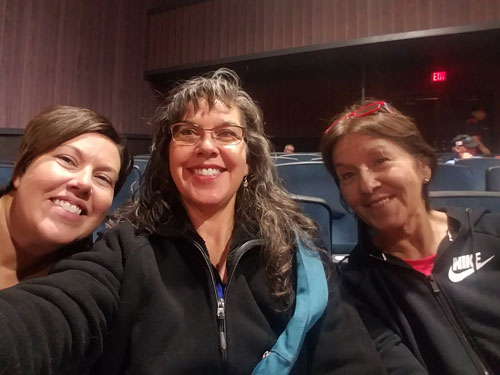
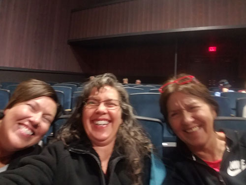
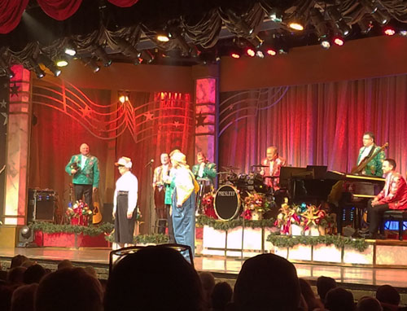
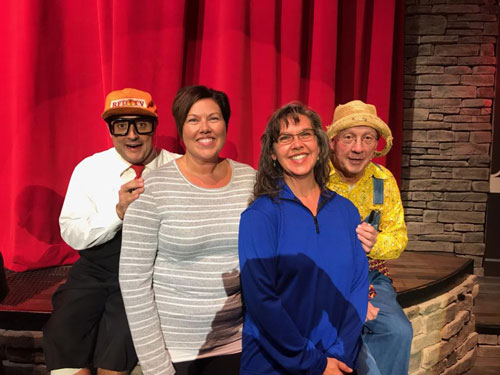
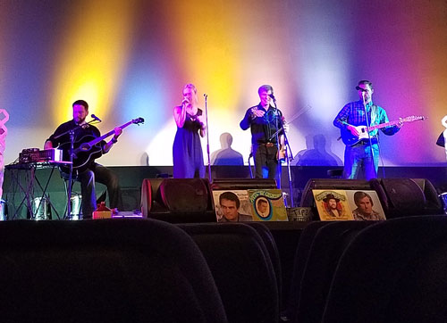
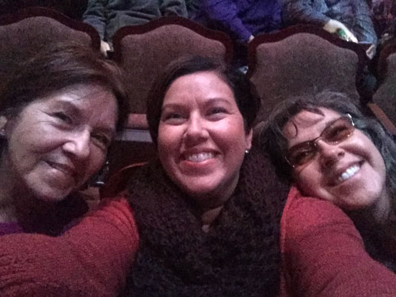
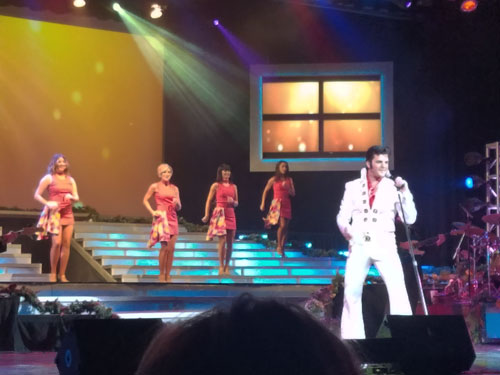

| This is the second year that Mom has generously
taken the three of us Morton women to Branson for a girl's weekend.
Another fun time was had by all of us, even though the weather tried to
freeze us out with an unusually cold spell. We ignored the weather and had
a great time seeing all the shows we could see in 3 days. |
|
| We started at the Illusionist Rick Thomas show. It was a good show,
but I didn't take any pictures there. Desirae and I enjoyed watching Mom be amazed at all his unexplainable magic tricks. |
|
 |
 |
| Here we are at the Presley's show, for old time sake. My parents have
been bringing us girls to the Presley show since I was a little girl - and that was ages ago! |
Here we are cracking up after taking that last shot. |
 |
 |
| Presley show in action | Mom, making us be the only adults lining up to get our photo with "Cecil" & "Herkimer" Presley |
 |
 |
| My favorite show was also the most low key. The George Jones and
friends show was like sitting in with a group of talented musicians while they goofed around together. |
Here we are at the amazing production of Moses at the Sight & Sound theater. Impressive show! |
 |
|
| And what visit to Branson would be complete without seeing Legends in
Concert? This time there was no Johnny Cash with his fly open, but it was a good show all the same. |
|